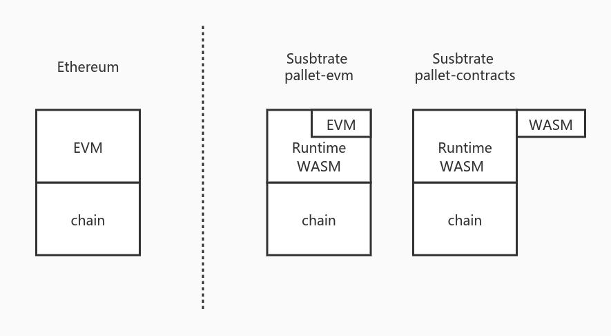
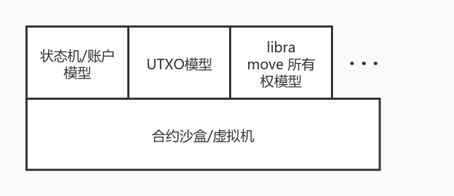
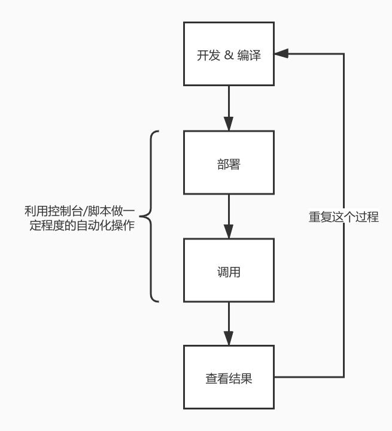

Substrate 合约书
介绍
本书用于介绍 Substrate 中与合约体系相关的一系列知识。
本书由 Patract (https://patract.io/) @ patractlabs 主导编写，由 Aten @ atenjin 负责。
本书仓库位于 https://github.com/patractlabs/substrate-contracts-book，欢迎有志之士一起为本书做出贡献。
本书主体包含三类：
- 运行合约的合约平台（模块）
- 编写合约的语言
- 帮助合约开发的工具们
其中由于pallet-evm（即EVM/solidity体系的合约）在以太坊生态中已有比较丰富的资料，故不会在本合约书中当做重点讲解。而另外的合约体系如pallet-actor，或libra移植合约平台等皆处于比较早期的研究阶段，因此也不会作为本书的重点。
本书当前主要以pallet-contracts （即WASM合约）作为主体进行介绍。
因此本书内容包含：
- 运行合约的合约平台（模块）
pallet-contracts
- 编写合约的语言
ink!Ask!Solang
- 帮助合约开发的工具们
RedspotEuropaElara
为了让合约开发者更好的理解pallet-contracts模块与WASM合约的运行方式，本书也会涉及一些WASM的介绍以及区块链合约模型的介绍。
合约综述
区块链运行合约的模型从本质上可以认为是 “区块链的环境（分布式共识系统）”+“能运行一段逻辑的平台”，例如
- 比特币的模型可以拆成区块模型/PoW + 比特币脚本
- 以太坊的模型可以拆成区块，状态模型/PoW + EVM
- Substrate的模型可以拆成区块，状态模型/Bft共识 + Runtime
因此一般来说，我们可以将区块链的模型拆成
- 运行区块链的底层系统：提供分布式可信环境
- 链的业务逻辑：运行在这个可信环境中
而由于区块链系统的特性，要求对相同的代码，相同的状态，执行的结果一定需要一致，因此在提供“链的业务逻辑”这一层，为了保证执行结果的一致性，要求整个运行环境必须是“无副作用的”，因此不会因为运行节点的不一致（指不是同一个节点）而导致运行的结果不一致。
因此为了保证这种特性，绝大部分区块链都会采用沙盒/虚拟机的模型加上裁剪一些功能来做到。
“运行合约的平台”即是一种链的业务逻辑，且这种业务逻辑特殊在其上面可运行的代码是开放的，合约内容不受链本身控制。因此对于这种情况，更需要一种“沙盒”的环境来隔离各个合约之间的运行。
什么是沙盒（虚拟机）
“沙盒”在计算机领域中的概念很广泛，而在区块链中，一般而言沙盒都会由一个虚拟机去运行（因为使用虚拟机最容易模拟沙盒的环境）。
因此不同的链就会采用不同的虚拟机来运行合约的沙盒：
-
Ethereum：
Gavin Wood 写的黄皮书构了的EVM的模型，创建了EVM虚拟机的概念并拟定了EVM的OP_CODE。之后设计了Solidity编译到OP_CODE，才有了Ethereum的整个生态。相当于Ethereum处理区块链的合约沙盒模型，从零到一构建所有设施。因此Solidity的语法以及EVM能做的事对比现在的区块链显得十分简陋（例如solidity的语法，EVM的栈深限制等等），但其作为先行者开创了区块链合约虚拟机模型先河。
-
Fabric:
作为联盟链，在使用场景上与公有链存在区别。因此Fabric提出链码的概念，并将链码运行在了docker中。docker就是比较重的一种虚拟机（相对于EVM而言），因此与EVM比较，Fabric的链码可以做到比Solidity更多的事，当是相对的，其运行的代价与EVM相比就高得多。
-
EOS：
EOS采用了Wasm作为合约的虚拟机，也是当时EOS的卖点。相比于运行Solidity的EVM，EOS的Wasm虚拟机的运行效率高了许多，以C++作为编译到Wasm的语言也天然拉近了许多传统的开发者。EOS作为Wasm虚拟机的先行者，在当时已经体现出Wasm相对于EVM的优势，但是由于其合约模型的设计（见下一章节）的缺陷以及当时环境的约束，再加上EOS并非真正的去中心化系统，导致EOS并没有很好的发挥出Wasm合约系统的能力。
-
Substrate 的
pallet-contracts：pallet-contracts采用了Wasm虚拟机来运行合约，当前出于安全考量只采用了Wasmi解释器来执行Wasm。但其合约模型与EVM的合约模型近似（见下一章节）。Wasm虚拟机与EVM同样具有启动快，随用随丢的特性，具备高性能和高扩展性的同时又不像docker， JVM一样太过庞大。因此Wasm慢慢在除了浏览器环境以外的更多场景被采用，例如边缘计算，热更新等等。所以当前越来越多的新区块链在需要一个沙盒环境时会将Wasm虚拟机作为主要方案。另一方面Wasm也具备从不同语言编译到Wasm的特性，例如rust，assemblyscript，c++等等，可以吸引到各类开发者加入到合约开发过程中。 -
其他：
其他区块链为了完成这个“沙盒”的目标也会有各自的方案，有的联盟链采用了裁剪过的JVM，有的公链采用了
RISC-V的虚拟机，有的链采用了从零设计一个虚拟机（如libra）。这些方案各自有各自的需求与特性，但从模型上而言，无论什么方案，最终目标都是为了提供一个虚拟机环境以运行合约沙盒。
运行合约的沙盒
上文已描述链的业务逻辑大部分会运行于沙盒的系统中，且“运行合约”这种业务逻辑更是要需要沙盒隔离。而另一方面Substrate的runtime就是一个沙盒环境（运行于Wasm中），因此在Substrate的合约模块（pallet-emv，pallet-contracts），就是需要在一个沙盒环境中运行另一个沙盒，如下图所示：

其中：
- 左边是以太坊模型，表示每运行一个合约，需要在链的平台上启动一个EVM虚拟机去运行
- 右边是Substrate模型，我们当前已知Substrate的链的业务逻辑是运行在Wasm虚拟机当中的：
pallet-EVM：将以太坊的EVM编译到了Runtime Wasm当中，因此每运行一个合约实际上与以太坊一致，创建了一个EVM虚拟机去运行。如果链是以Wasm形态运行，即是在Wasm虚拟机中生成了一个EVM虚拟机去运行。pallet-contracts：Wasm合约使用Wasm虚拟机运行合约，与pallet-evm不同的地方是，如果链是以Wasm形态运行，Wasm合约的虚拟机是跳出当前Runtime Wasm虚拟机重新创建了一个新的Wasm虚拟机运行。- 当前（在substrate的提交之前
0b0d124d）Runtime的Wasm虚拟机推荐采用的是Wasmtime而pallet-contracts合约只能采用Wasmi。 pallet-contracts也可以使用Wasmtime执行，但是当前parity认为Wasmtime不可控性比较大，因此暂时还未采用Wasmtime。当前他们有相关计划，也有原型代码来使用Wasmtime运行pallet-contracts的合约。（注1）
- 当前（在substrate的提交之前
- 总之运行合约的过程中，大部分链都采用了一种沙盒的模型去运行合约。而对于EVM，
pallet-contracts模型而言，是每运行一个合约就会创建一个虚拟机。
注解
Wasmtime是实现了JIT的Wasm虚拟机，而Wasmi是纯解释器型的Wasm虚拟机。Wasmtime的执行效率比Wasmi高很多。
合约模型
在已经具备合约及合约沙盒的概念后，我们就可以开始讨论合约模型的概念了。
合约沙盒只是代表运行合约的环境，而合约是以什么方式运行的，合约和合约是怎么交互的，合约是怎么与链的数据互动的，这些问题就归属于合约模型问题。
换句话说，合约模型就是合约是以什么模型运行在合约沙盒/虚拟机中的。

如图所示，合约模型与合约虚拟机本质上是可以解耦的，其中关系只存在合约虚拟机是否能支持上层所需要的合约模型，例如：
- Bitcoin 的虚拟机就是比特币脚本的栈执行器，由于执行器设计是非图灵完备的OP_CODE，因此对于上层的合约模型只能支持Bitcoin的脚本。
- Ethereum 跟随Bitcoin的灵感，设计了具备图灵完备的OP_CODE，即EVM虚拟机（Ethereum Virtual Machine）。但是EVM的OP_CODE比较简陋，且只有栈的设计，没有堆的概念。但是EVM引入了读写状态的OP_CODE，因此从虚拟机机制上对合约模型可以支持状态模型。因此EVM也被看做一个执行状态转换的状态转换机（如Gavin Wood撰写的以太坊黄皮书中所描述的）。状态模型实际上是比较通用的抽象模型，绝大多数模型都可以用状态模型模拟（如在状态模型中构建UTXO模型），因此从理论上来说，只要继续完善EVM的OP_CODE，EVM的上层同样可以构建出其他合约模型。
- libra 认为区块链的核心在于资产的处理，因此提出了Move的虚拟机模型（Move Virtual Machine (MVM)）来从虚拟机上限定合约的模型，可以理解为是一种特化逻辑过的OP_CODE集合。因此MVM的上层只能运行Move模型。
通过以上讨论，我们可以认识到合约模型的概念，并且理解到虚拟机对上层合约模型的限制，因此接下来就可以讨论Wasm虚拟机可以运行的合约模型以及pallet-contracts的合约模型构成。
Wasm 虚拟机
Wasm是一种在基于栈的虚拟机上运行的二进制的指令格式。（WebAssembly (abbreviated Wasm) is a binary instruction format for a stack-based virtual machine, from https://webassembly.org/）因此Wasm的模型和主流计算机程序的模型结构比较相似。另一方面Wasm被设计成为了一种比较通用的形式，且设计了WASI并支持了运行环境自由定义host function，因此虽然Wasm从浏览器发展而来，但是当前的使用场景已经不限于浏览器，开始在边缘计算，热更新，Serverless平台等发挥效果。
若以指令的完备性来衡量一个虚拟机的能力，则EVM处于半成品的程度，限制多且不够灵活；而JVM，Wasm虚拟机则是比较完备的，限制少，功能性强。另一方面指令设计的合理性一定程度也会影响虚拟机的执行效率，同时虚拟机采用的实现方案也会对执行效率产生比较大的影响。
例如EVM当前只能以解释器（interpreter）的形式运行，并且当前的实现过程体（go, c++等版本）中没有看到针对解释器的优化，执行效率比较底下，而 JVM, Wasm等虚拟机有采用JIT的模式的实现，执行效率相当高甚至逼近本地执行的性能。
注：
pallet-contracts当前只能使用wasmi（解释器）执行Wasm代码，因此合约的执行性能比不上能使用wasmtime的Runtimed的执行。
而同时，Wasm虚拟机相比于JVM等虚拟机，十分轻便（Lightweight），快速，可定制性强，且host function的功能给予了Wasm虚拟机与宿主之间交互的通道，因此和其他虚拟机相比，将Wasm虚拟机作为区块链合约沙盒与链的功能结合在一起比较容易。
另一方面在笔者看来，Wasm是处于底层代码与上层代码之间比较好的一个抽象层，且其复杂性与完备性也远超于EVM，因此比较适合区块链合约领域的需求。
因此Wasm虚拟机提供的沙盒环境在满足合约沙盒的前提下还满足以下2点要求：
- 指令完备，功能性丰富，执行效率高
- 有适合的的接口能与宿主（这里指代运行Wasm的环境，即链）交互，方面宿主提供需要的功能。
EVM 的合约模型
由于Ethereum是存储状态的区块链，因此EVM的合约模型理所应当的需要基本读写状态的功能。如果把每次合约运行的过程看做一次程序的启动到执行结束的过程，那么状态数据的变化就对应着这个程序需要持久化数据的变化。
因此对于读写状态，以太坊的EVM提供了SLOAD和SSTORE两个指令。
另一方面以太坊描述一个账户使用了“账户模型”，即将合约和调用合约的用户都看做了一个账户，在这个账户下存在balance等概念，因此EVM提供了CALLER，ORIGIN，CALLVALUE等等一系列指令来描述这种模型。
同时由于在EVM的抽象体系中，认为合约与用户是一致的，因此出现了“合约调用合约”的模型，即CALL，DELEGATECALL等指令，由此带来了合约的可组合性，造就了Ethereum繁荣的生态。而在EVM中，一个合约依托于一个EVM进行运行，因此合约调用合约是在一个EVM中启动了另一个EVM并加载指令进行执行。
当然EVM虚拟机设计的初衷就是为了解决比特币脚本的非图灵完备问题，为了解决这个问题并保证停机问题不发生，引入了指令的Gas计费模型
因此总结以上可以得到，EVM的合约模型具备以下特性：
- 处理数据的模型是状态机模型，状态的变更靠外界调用触发（类比于调用了状态变更函数的过程）；
- 合约模型中需要链相关的特性；
- 将合约与用户看做一致，允许合约调用合约；
- 引入指令计费模型。
pallet-contracts的合约模型
这里直接下结论：pallet-contracts虽然使用了Wasm虚拟机来执行代码，但是其合约模型基本与EVM合约模型一致。
也就是说pallet-contracts的合约模型同样具备以下4点特性：
- 处理数据的模型是状态机模型；
- 合约模型中需要链相关的特性；
- 将合约与用户看做一致，允许合约调用合约；
- 引入指令计费模型。
并且，在以上4种特性的基础上，增加了“存储租赁模型”：
Rent存储租赁计费。
在上文已经称述了合约执行的环境和合约模型是可以解耦的，EVM由于设计的比较早还没有解耦这个层次的概念，因此在指令中SLOAD，SSTORE及类似和链相关的指令是与EVM其他指令合并一起的。而Wasm本来并非为区块链设计，因此一定不存在这些和链环境相关的指令。
因此Wasm的host function即是用来完成这件事情的。链作为host宿主，只需要把他认为合约可能会用到的方法提供给Wasm虚拟机，让他导入这些函数对象，在合约的执行过程中即可以使用。因此通过host function，pallet-contracts合约模块就可以具备1，2，4功能，并将提供3需要的部分功能，同时第5点特性（租赁计费）也可以引入。
并且其中第3点功能的实现方式也与EVM一致，当出现合约调用合约的部分时，通过host function从Wasm回到了pallet-contracts模块，并启动了一个新的Wasm虚拟机去执行被调用的合约。（该部分在以后的文章中会描述）
因此总结而言，pallet-contracts的合约模型具备如下特性：
- 合约模型与EVM的合约模型一致，并在此基础上增加了存储计费模型
- 与链交互的实现通过Wasm的
host function特性实现
使用Wasm虚拟机实现其他合约模型
刚才简要描述了pallet-contracts是如何在Wasm虚拟机上实现合约模型的，由于前文已经解释了虚拟机与合约模型是可以解耦的，因此实际上在Wasm虚拟机上同样可以实现其他的合约模型。
例如我们可以考虑将Move虚拟机也移植到Wasm虚拟机中，其有两种可能的实现方式：
-
类比于将EVM的实现体在Runtime的Wasm环境运行，可以将MVM的实现体也编译成Wasm的形式（例如命名为
pallet-mvm），在Runtime Wasm中运行。基于这种实现，Move依然可以按正常方式编译，并和Solidity的编译结果运行于
pallet-evm一致，将Move的编译结果运行在例如pallet-mvm的平台上。 -
将MVM与所有权，链相关的特性抽象一层，做成和
pallet-contracts的形式，并设计将Move语言编译的中间码IR编译到Wasm。基于这种实现，可以将Move编译成为Wasm，并在Wasm虚拟机中运行。
其他合约模型
EOS的合约模型
EOS的合约模型与EVM类似，同时强化了账户模型的概念。因此EOS使用Wasm的方式也是基于Wasm的执行，并通过host function引入与链相关的功能。
EOS和EVM模型的主要区别在于，EOS的合约调用合约的过程是以发交易的形态调用，并且EOS的资源模型是抵押模型。当前普遍认为正是EOS的抵押模型最后导致EOS没有走向成功。
异步合约模型
pallet-actor是 substrate 尝试实现异步合约模型的一个开端，当前没有什么进展。pallet-actor的模型打算使用Wasm虚拟机作为运行环境，并在此基础上添加异步的功能以提升性能。
当前也有其他少数对异步合约模型的研究，但是皆处于比较初步的阶段。
WASM简要介绍
WASM与合约模型的关联

pallet-contracts 合约模块
pallet-contracts合约模块, 一般称呼为“Contracts Pallet” 或者 “FRAME Contracts pallet”，又或者称呼为“Substrate Smart Contracts”，是parity官方研发的Wasm合约模块。
依据Substrate knowledgebase的介绍，Contracts Pallet具备如下特性：
- Are inherently safer to the network.
- Have built in economic incentives against abuse.
- Have computational overhead to support graceful failures in logic.
- Have a lower bar to entry for development.
- Enable fast pace community interaction through a playground to write new logic.
ink
ink! is an eDSL to write WebAssembly based smart contracts using the Rust programming language. The compilation target are blockchains built on the Substrate framework.
ink! 是 parity 官方编写的，可以提供一种 eDSL 的方式编写 Rust 合约，并编译为 Wasm 运行于 Contracts Pallet 模块上。
虽然 ink!自称为一种写合约的 eDSL，但是笔者更倾向于认为 ink!是使用 Rust 语言编写符合能满足 Contracts Pallet 运行的合约框架。
例如对于 EVM 而言，若把 EVM 的指令集看做一种规范（EVM 的指令集已经包含了 EVM 合约模型的信息），那么只要能编译到 EVM 指令集的语言都可以称为能运行在 EVM 上的合约语言，例如：
- Solidity
- Vyper
而 ink!这里同理。Contracts Pallet 要求是能满足运行 Contracts Pallet 合约模型的 Wasm 代码，因此任何能编译成满足这个 Wasm 合约模型的框架/语言/库都可以称为 Contracts Pallet 的合约语言。
ink!就是使用 Rust 语言，并在此基础上通过 Rust 的卫生宏系统设计了一套 eDSL，并使用该 eDSL 编写能满足 Contracts Pallet 要求的 Rust 代码。除 eDSL 之外，ink!还提供了适用于合约模型的存储集合类型，生成 Metadata（对应于 Solidity 的 ABI）等工具库。
ink!的官方文档见：
ink! 到 Contracts pallet 的过程
parity 官方文档中提供了示例图：

由此图可知，编写 ink!合约并部署的过程需要
- ink! 依赖库：提供 ink!的 eDSL 框架以及提供相应的依赖组件
- cargo-contract: 编译 ink!合约的工具
- SDK：与链交互并将合约部署到链上的 SDK，parity 官方主要提供了
polkadot.js，Patract 提供了 Himalia 工具包，包含go，java，python，C#的 SDK
本章节将主要介绍 ink!以及cargo-contract的信息，关于 SDK 的信息放在后续章节介绍。
ink! tutorial
TODO
ink! 框架
ink!的所有主体功能都实现于 ink/crates 目录下：
- crates:
- allocator：与Wasm相关，定义allocator，开发者绝大部分情况下无需关心
- env：提供和链相交互的组件，总结来说就是和链相关的部分都会放在这里，包含
- host function 部分
- 部分需要导入的类型、trait定义
- event 的topic
- lang：eDSL过程宏的定义组件，合约的规范由这个地方决定
- metadata：生成metadata的组件
- prelude：合约编写过程中需要预先导入的包，包含一些标准库
- primitives：操作状态存储的指针，开发者绝大部分情况下无需关心
- storage：提供链存储的分配模型以及提供一些预定义好的存储集合类型
ink! eDSL基础元素
ink! eDSL设计的元素与Solidity的元素其实比较近似，因为Contracts Pallet的合约模型结构和EVM的合约模型就是比较近似的。
因此ink!的设计可以找到很多和Solidity相似的影子（Substrate 的 Runtime 设计同理）。后文描述ink特性时会尝试跟Solidity的特性进行对比，方便读者理解。
eDSL 的元素
由ink!文档或ink!提供的example，代码可以看出，ink!在Contracts Pallet的模型上，同样提出了以下三点基础元素：
constructor/messagestorageevent
不过由于Rust过程宏的设计关系，可以看到ink!首先要求一个合约需要处于一个mod下，并且在这个mod的上面添加上#[ink::contract]宏：
#[ink::contract]
mod erc20 {
// ...
}
这样，相当于告知ink!从这个mod里面的东西就是要依据ink的eDSL处理的部分。
#[ink::contract]
因此当遇到宏#[ink::contract]，即表面这是在ink!所识别的“合约部分”。因此我们可以看到，很多use xxx的导入都会放到处于#[ink::contract]的mod作用域下。
并且当前ink!设计为，在一个crate包下，只能出现一个#[ink::contract]，因此代表着ink!认为一个合约的维度是以rust的crate为单位，即如果在同一个crate中，无论是在同一个文件（比如都在lib.rs下）或者是在不同的文件中定义了2个以上的被#[ink::contract]修饰的mod，例如：
#[ink::contract]
mod erc20 {
// ...
}
#[ink::contract]
mod another_define {
// ...
}
类比于solidity的：
// a.sol 在同一个文件中定义多个 `contract`
contract A {
}
contract B {
}
那么在ink!的编译中会认为这种情况是非法的。
当然与之相对的，只要在当前crate中只有一个#[ink::contract]修饰的mod，其他mod该怎么正常使用就正常使用，因此ink!修饰的合约crate依然可以很好的做好代码隔离，增强可读性和可维护性。这个能力对于维护大型复杂合约比较重要，例如：
#[ink::contract]
mod erc20 {
use crete::another_define::*;
}
mod another_define {
// ...
}
例如如下实例：
mod fxck {
use crate::erc20::Erc20;
use ::ink_lang::Env; // 注意这里需要引入 `ink_lang::Env`
impl Erc20 {
pub fn tmp(&self) {
self.env().caller(); //
}
}
}
#[ink::contract]
mod erc20 {
#[ink(storage)]
pub struct Erc20 { ... }
impl Erc20 {
#[ink(constructor)]
pub fn new(initial_supply: Balance) -> Self { ... }
#[ink(message)]
pub fn transfer(&mut self, initial_supply: Balance) -> Self {
self.tmp(); // 调用在其他`mod`里定义的方法
}
}
}
这种模型可以做到一些在Solidity下做不到的代码隔离，增强可维护性。（因为Solidity的library只能用于纯函数计算）
总结而言，在ink!体系下：
- 一个合约以一个
crate的单位，一个crate内只能出现一个#[ink::contract]定义； #[ink::contract]修饰的mod代表合约的内容，同时也代表了合约的基础元素都必须定义到这个mod下；- 除
#[ink::contract]修饰的mod以外的部分（其他mod，函数，类型）皆遵循rust的规则，可以做好良好的代码隔离提升可维护性； - 实践中可以将
#[ink::contract]修饰的mod当做合约的入口，将实现的逻辑分散到其他mod下。
以下使用“合约mod”表示被#[ink::contract]修饰的mod
storage
在合约mod中，一定需要定义一个结构体，且这个结构体被#[ink(storage)]所修饰，表示定义了该合约的存储。
同时这个被#[ink(storage)]修饰的结构体定义，也被视作一个可操作的合约实体，因此所有与合约相关的资源，类型，操作都会和这个结构体绑定在一起，当在合约调用合约的情景中，被调用的合约的类型也由这个结构体来表示。
因此这个结构体可以理解为是合约实体。
虽然修饰
mod的部分才是合约，但是因为mod在rust中只能代表作用域，因此为了实践使用，使用#[ink(storage)]修饰的结构体表示能过进行操作的合约实体。在这种语境下，可以将
#[ink::contract]修饰的mod理解为“开启了合约域”的概念，而#[ink(storage)]修饰的stuct是在这个合约域下的合约。
这里ink!定义的storage的概念和Solidity中定义“存储”的概念一致，表示定义在这里的属性即是最终写到链上的状态。一切合约逻辑编写的目的最后都是为了对这里定义的状态的修改。
不过由于当前ink!采用使用一个结构体来承载合约状态的方案，因此当前这个合约所有的状态都只能定义在这个结构体中。当合约设计得比较大，比较复杂的时候会导致这里的可维护性下降。
定义storage的示例如下：
#[ink(storage)]
pub struct Erc20 {
/// Total token supply.
total_supply: Lazy<Balance>,
/// Mapping from owner to number of owned token.
balances: StorageHashMap<AccountId, Balance>,
/// Mapping of the token amount which an account is allowed to withdraw
/// from another account.
allowances: StorageHashMap<(AccountId, AccountId), Balance>,
}
被#[ink(storage)]修饰的结构体在后文统称为合约结构体。
这里尤其需要注意几个特性：
-
在该合约结构体内定义的属性的类型必须是实现过
SpreadLayout的类型（或者更准确说是实现了PackedLayout的类型，因为PackedLayout是继承于SpreadLayout的定义）：/// Types that can be stored to and loaded from the contract storage. pub trait SpreadLayout { }这里只能使用实现过这个trait的类型的理由很简单，因为storage和一般的类型不同，其必须含有“链”的信息在其中，因此不同的链的合约实现都必须有一个部分用于处理合约中的storage（即状态）的分配问题。
例如Solidity在编译过程给实际上是按storage在合约中定义的上下顺序，做偏移分配该状态的key。这里实现过
SpredLayout或者说PackedLayout类型的都会有一个近似的过程来进行状态的分配。ink!对于一般类型已经都做过基础实现，但是对于集合类型（
Vec，HashMap等）而言，由于合约的状态需要hook读写的过程，因此无法对集合类型实现这个trait。所以在ink!中，对标准库中常用的集合类型重新全部做了一次实现，且位于#[ink(storage)]修饰的结构体的属性类型，若使用集合类型时，必须使用ink!提供的集合类型。由于Solidity比较简陋，因此Solidity定义的存储map是无法进行遍历的。（由Solidity设计的缺陷导致）
ink!在设计的这块的时候进一步做了很多事情，因此ink!提供的集合类型
Vec，BTreeMap，HashMap等等都是可以遍历的。相较于Solidity能实现的功能而言是相当大的进步。 -
即便基于以上的设计，嵌套集合类型既然很难实现（因为Substrate的状态结构采用了k/v模型）。因此在设计中还是只能尽量避免嵌套集合类型。如果一定需要嵌套集合类型，需要将嵌套的层次打平（flat），将第二层的key和第一层的key合并一起，使用元组替代（相当于Substrate Runtime中的
double_map）// solidity contract A { mapping (uint => mapping (uint => uint)) }在ink!中类似的代码应该为:
#[ink(storage)] pub struct Erc20 { // 注意这里的key采用了元组 `(AccountId, AccountId)` allowances: StorageHashMap<(AccountId, AccountId), Balance>, } -
storage中提供了一种
Lazy的模型，允许开发者使用Lazy包裹一个类型，可以让状态数据在使用到的情况下再加载：/// A lazy storage entity. /// /// This loads its value from storage upon first use. /// /// # Note /// /// Use this if the storage field doesn't need to be loaded in some or most cases. #[derive(Debug)] pub struct Lazy<T> where T: SpreadLayout, { cell: LazyCell<T>, }使用方式：
#[ink(storage)] pub struct Erc20 { /// Total token supply. total_supply: Lazy<Balance>, }
constructor/message
constructor/message就是触发合约状态变更的入口函数。也就是说constructor/message即是合约状态的状态转换函数。
constructor/message只能修饰合约结构体的方法，不能用来修饰其他结构体的方法，或者其他纯函数。
在合约mod中，被constructor和message修饰的合约结构体的方法至少各有一个，若分别少于1个都会导致编译错误。
其中：
-
constructor即对应着 Solidity 合约中的构造函数。当合约被部署的时候（在Contracts Pallet中当前代表着从已上传的合约代码中做instantiate的过程），会触发对应构造函数的调用。这里需要强调，构造函数的调用与合约实例化是2个概念的事情，这个过程在ink!和Contracts Pallet的协调过程中并非原子化。因此会出现构造函数没有被调用，但是合约地址会生成，也可以正常调用这个未调用过构造函数的合约实例的情况。
典型的例子是在调用
instantiate的时候传入的错误编码的参数。 -
message即对应着 Solidity 合约中的public/external等 的 call 方法。由于Rust可变/不可变方法的特性，message利用了这个特性来表示这个方法是否会修改合约的状态。因此若
message修饰的方法是// 注意方法的第一个参数是`&self` #[ink(message)] pub fn total_supply(&self) -> Balance { *self.total_supply }则表示这个方法的调用不会修改状态（由rust语法所控制），和以太坊一致，这类方法多用于rpc调用返回一个合约的存储，或返回一些基于存储的计算结果。
若修饰的是
// 注意方法的第一个参数是 `&mut self` pub fn transfer(&mut self, to: AccountId, value: Balance) -> Result<()> { let from = self.env().caller(); self.transfer_from_to(from, to, value) }则表示这个方法的调用会修改状态，因此这个方法如果是以交易调用被打包的形式被调用执行时，会触发状态的改变。若是以rpc调用时，表示是模拟执行了一次。
同时在合约编译后会生成metadata.json（对应Solidity的ABI），在这个metadata中对于message部分会有一个
mutates的字段来标示这个方法是否是可变的。
message的selector
Solidity对于合约方法的ABI的产生使用的是将方法名加上参数类型作为函数签名拼凑成为字符串然后做hash取前4字节。
call = "func_name(param1_type,param2_type,...)"
bytes4(keccak256(call), a, b)
在ink!中这种让合约区分调用触发点的概念叫做selector。
由于rust不支持函数重载，因此在ink!中采用了比较简陋的设计，直接对函数名字的字符串做hash取前4字节：
call = "func_name"
blake2_512(call)[0..4]
笔者认为这种设计造成了其他合约语言设计的困扰。因为rust不支持重载不代表别的语言不支持重载。当前Solang将Solidity编译到Wasm的过程后，想和ink!的metadata做兼容，互相调用就会出现问题。
另一方面selector也是运行开发者自己定义的
#![allow(unused)] fn main() { #[ink(message, selector = "0xCAFEBABE")] pub fn was_it_ten(&self) -> bool { ... } }
message的payable
Solidity中对于方法会有一个payable的修饰符，用于表示这个方法可以接受一定金额。
因此在ink!中也提供payable来表示调用这个方法的同时是否可以附带转移一定的本币的金额。在ink!当前的设计中，若在调用一个非payable的message时同时附带了金额时，这个调用过程会认为是错误的。
默认情况下认为paybale是false的，只有当合约开发者指定了payable后才是true。
指定一个message是可调用的案例是：
#![allow(unused)] fn main() { #[ink(message, playable)] pub fn was_it_ten(&self) -> bool { ... } }
另一方面在metadata中，对于message部分会有一个payable的字段来标示这个方法是否是需要付费的。
event
event的概念在状态机模型中其实并不是必须的。但是由于区块链是一个异步系统，因此在发送交易去触发状态变更后，并不能马上知道变更结果，只能依赖监听某个元素来判定执行结果。event便是在Solidity的阶段设计的元素，这个设计同样被继承到了Substrate Runtime中，以及ink!中。
笔者不觉得event是一个很好的设计，理论上有其他更好的方式，或者event的变种。event一定程度上会造成开发者的滥用。
ink!的event在Contracts Pallet中最后是通过host function将合约定义的event打印到了链的event当中。
ink!的event设计和Solidity相比就没有什么特别的地方了，不过由于是在Wasm中运行的合约，因此打印合约的event需要通过host function与链进行交互，因此调用的方式需要通过env()去调用。
Self::env().emit_event(...);
// or use
self.env().emit_event(...);
ink! 跨合约调用
ink! 与solidity的对比
cargo-contract
ink! 当前的坑
Ask! 介绍
Solang
Redspot
Redspot tutorial
控制台console
Redspot 提供了一个功能强大的控制台，允许开发者简单的使用命令与合约做操作，或调用位于scripts目录下的脚本做机械化的重复工作等等。
Redspot 的控制台还有很多丰富的特性：
- 提供了强大的tab补全能力
- 控制台记录了命令历史，开发者能够查看
cache/console-history.txt文件获取历史执行过的命令，也可以通过↑按键找到需要的历史命令。将来控制台也会提供快捷键索引历史命令的功能。
启动控制台
$ npx redspot console
# 若已经确定在`artifacts`目录下编译好的合约符合自己预期，则可以加上 --no-compile 参数不进行合约编译
$ npx redspot console --no-compile
此时执行.help命令可以看到相应的帮助：
> .help
.break Sometimes you get stuck, this gets you out
.clear Alias for .break
.editor Enter editor mode
.exit Exit the repl
.help Print this help message
.load Load JS from a file into the REPL session
.save Save all evaluated commands in this REPL session to a file
>
常用命令
控制台默认导入了redspot库下的供合约交互的组件，如
patractnetwork- ...
与在scripts目录下的脚本一致，通过这些组件可以调用许多功能，如和合约交互，查询信息，查看网络等等。
常用工作流
举例：当前想要调试erc20合约。那么在合约编译好后，可以在artifacts目录下看到erc20.json和erc20.wasm文件。加载合约相关的操作需要以这里的文件名为标示。
例如如果仿照scripts目录下的deploy.ts部署脚本，我们可以直接在控制台执行部署合约并调用的命令：
var factory = await patract.getContractFactory('erc20'); // erc20与文件名一致
var contract = await factory.deployed('new', 10000000); // 上传代码并实例化这个合约
如果是已知一个合约的地址，想在先加载这个合约实例则可以通过：
var factory = await patract.getContractFactory('erc20'); // erc20与文件名一致
var contract = await factory.attach('16DHBsUan9GoedoTYJmbyBZJMmN39ZpKUPvYeAGMTXCgxLQe'); // 加载合约地址
此时这里的contract对象就是一个实例化好的对象。因此后续可以直接用这个contract对象与合约进行交互，例如调用一个转账功能：
var ret = await contract.transfer("15Jbynf3EcRqdHV1K14LXYh7PQFTbp5wiXfrc4kbMReR9KxA", 100)
ret.events // 打印events的信息
如果是为了通过rpc调用获取执行某个方法的结果：
var ret = await contract.balanceOf("15Jbynf3EcRqdHV1K14LXYh7PQFTbp5wiXfrc4kbMReR9KxA")
c.output.toString()
如果这个过程是比较固定的，则可以把以上命令写到一个文件中放到scripts目录下，例如命名为scripts/do_something.ts：
var factory = await patract.getContractFactory('erc20');
var contract = await factory.deployed('new', 10000000);
var ret = await contract.transfer("15Jbynf3EcRqdHV1K14LXYh7PQFTbp5wiXfrc4kbMReR9KxA", 100)
ret.events
然后使用以下命令即可自动化执行一系列过程：
.load scripts/do_something.ts
因此控制台辅助的功能如下：

Europa
Europa tutorial
Europa 特性
Patract
Patract 做的东西具体包括:
-
在开发者端：
- Jupiter：独立的智能合约测试网，提供给合约开发者测试合约链的环境。
- Ask!：AssemblyScript 版的 Ink! 合约框架，吸引 TS/JS 的开发者，给不愿意使用 rust 的合约开发者另一个选择。
- Redspot：Wasm 合约开发工作流和脚手架：对标 Ethereum 生态中的 Tuffle/Redhat，让合约开发项目化，自动化的工具。Redspot 采用插件化设计，运行开发者添加自己设计的插件丰富 Redspot 的功能。
- Europa：Runtime 和合约运行沙盒：对标 Ethereum 生态中的 EthereumJS/Ganache，给合约开发者提供了丰富的调试信息，便于快速开发合约。
- Elara：实时和可扩展的波卡 API：对标 Ethereum 中的 Infura，给合约项目方提供节点的 Endpoint，不用自行搭建节点获取数据。
- Megaclite：零知识证明的底层支持：在 Jupiter/Patract 链中提供零知识原语支持，可以允许项目方设计 zkRollup 或其他零知识相关合约。
- Metis：Ink! 合约标准库：对标 Ethereum 中的 openzeppelin-contracts，给合约开发者提供可复用的轮子，不必从零开始编写合约代码。
- Himalia：多语言合约 SDK：对标 Ethereum 中的 Web3J，Web3Py 等 SDK，给合约项目方提供不同语言的环境，丰富的接口与合约进行交互。
- Leda：合约监控台：对标 Ethereum 生态中各类合约监控设施，让合约项目方随时监控合约的存储情况，代币转移情况，合约调用情况等等。
- Carpo：专注开发合约的智能 WebIDE：对标 Ethereum 中的 Remix，但其将会是对 Patract 以上合约开发工具的集大成者。Carpo 将采用最新的 WebIDE 技术，使得云端开发无限贴近本地开发，同时完整的云端让开发者无需搭建任何开发环境即可进行开发，开箱即用的 Patract 工具链给合约开发者提供了一体化开发体验，让开发者的开发、调试、测试和部署的合约过程如丝般顺畅。
-
在用户端包括：
- Patra Store：作为 Patract 平行链钱包和 DApp 生态的入口，在测试网阶段将集成一些示例应用和配套开发工具套件用法演示，帮助开发者快速开发 Wasm 合约和前端界面，帮助用户快速进入波卡新合约生态。
- Patra Scan：专门为智能合约链优化的区块链浏览器，集成比统一的链浏览器更丰富的合约数据信息展示，增强统计和自定义的查询功能。